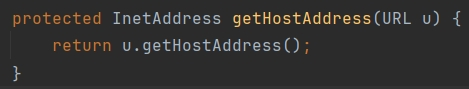

URLDNS链反序列化分析
白
写这篇文章，一来是记录一下自己的学习过程，同时也想以我自认为比较好理解的方式和逻辑为大家分析这个链
简介
URLDNS链只依赖原生类，没有 jdk 版本限制，它不会执行命令，只会触发 DNS 解析，因此通常用来探测是否存在反序列化漏洞。这个漏洞关键点是 Java 内置的 java.net.URL 类，这个类的 equals 和 hashCode 方法在对 URL 对象进行比较时（使用 equals 方法或hashCode 方法），会触发一次 DNS 解析，因为对于 URL 来说，如果两个主机名（host）都可以解析为相同的 IP 地址，则这两个主机会被认为是相同的。
分析
URL
先分析一下URL类的equals 和 hashCode 方法为什么能触发DNS请求
先写下面一段代码
1 | |
equals
跟进equals方法，如下图

可以看到，URL#equals 方法重写了 Object 的判断，调用 URLStreamHandler#equals 方法进行判断，跟进。

URLStreamHandler#equals 方法判断 URL 对象的锚点是否相同，并调用 sameFile 方法比较两个 URL，看它们是否引用了相同的 protocol、host、port和path，跟进sameFile
sameFile 方法在比较 host(主机)时，调用 hostsEqual 方法进行比较，跟进hostEqual方法
可以看到，hostsEqual 方法调用 getHostAddress 方法，对要比较的两个 URL 进行请求解析 IP 地址，并实施对比。跟进getHostAddress方法

没啥说的，接着跟
URL 类的 getHostAddress() 方法检查 hostAddress 是否已经解析，如果没有，则使用 getByName(host) 来解析主机名，触发了 DNS 请求
hashCode
还是跟进上面那个代码的hashCode，如下图
此方法将一个对象映射为一个整型的值，通常与 equals 方法同时出现。当 equals 方法被重写时， hashCode 也需要被重写。按照一般 hashCode 方法的实现来说，如果两个对象通过 equals 方法判断相同，那它们的 hashCode 一定相等。URL 的 hashCode 方法也进行了重写，调用了 URLStreamHandler#hashCode 方法。在此之前有一个判断，那就是 hashCode != -1。(PS：hashCode默认就是-1，在构造函数里可以看到)，此处不深究这个判断条件，后面会分析。当判断走到hashCode方法，跟进去

也是调用了 getHostAddress 方法对 URL 的 host 进行解析。
HashMap
前面提到这个漏洞的关键点是java.net.URL 类的 equals 方法或 hashCode 方法，用于触发DNS请求，但是URL的readObject方法并没有调用到hashCode方法
所以我们需要找到另一个重写了readObject方法并且调用了URL类的hashCode方法的类，所以找到了HashMap这个类，如下图
这里调用了hash方法，跟进
当key不为null，将调用key的hashCode方法。如果这里我的key就是一个url对象，那不就是调用url的hashCode方法吗？
到这里就很清晰了，HashMap就是入口点(kick-off)，URL的equals和hashCode是触发点(sink)
但是
其实还有问题：第一，在使用 HashMap 的 put 方法时，也是调用 putVal 方法(图10)，会对 key 进行 hash，触发解析。如果我们不想在生成 payload 时触发 DNS 解析，就要使用反射将值放进去。
第二， URL 对象有一个属性 hashCode，默认是 -1，使用hashCode 方法计算时会在 hashCode 属性中缓存已经计算过的值，如果再次计算将直接返回值，不会在触发 URLStreamHandler 的 hashCode 方法，也就不会触发漏洞。所以我们需要在生成的 HashMap 中的URL 参数的 hashCode 值在反序列化时为 -1，而刚才说过，如果使用 put 方法，会调用一次 key 的 hash 计算，也就是 URL 的hashCode 方法，这样就把 hashCode 缓存了，在反序列化时就不会触发 URLStreamHandler 的 hashCode 方法以及后面的逻辑。所以有两种思路解决这个问题：
- 如果使用 HashMap 的 put 方法，将 URL 对象放入 Map 的 key 中之前，先将其 URL 对象 hashCode 进行修改，使其不等于 -1，这样就不会触发 DNS 查询，放入之后，再使用反射将 URL 对象中的 hashCode 修改为 -1，反序列化的时候就可以正常触发了。
- 直接反射调用 HashMap 的 putVal 方法绕过 hash 计算。（由于 JDK 1.7 中方法名不一样，细节也不一样，所以不具有通用性）
第一种思路的代码实现：
1 | |
第二种方法就不介绍了，详见su18师傅的文章，还有对ysoserial链的分析
参考
https://www.bilibili.com/video/BV16h411z7o9?p=1&vd_source=9fe5dd16d67801322fd30df51f7b3fd8